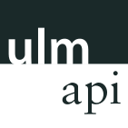
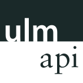
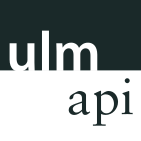
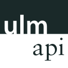

Falco Nogatz
Datalove University Group | UlmAPI | OK Lab Ulm
Inspiration
Collections of Existing Applications
ulmapi.de
codefor.de
Overview
Examples of possible data
Examples of possible data
- Geodata
- Public transport
- Statistics
- Budget & Finance data
Geodata
openstreetmap.org
openstreetmap.org
uulm-map
Overpass API
Source snippet of uulm-map
var postboxes = new L.OverPassLayer({
minzoom: 15,
query: "node(BBOX)[amenity=post_box];out;",
callback: function(data) {
...
}
})
oeffnungszeiten
kiez-karte.berlin
Flächentool
Geodata
City of Ulm, daten.ulm.de
Click-that-hood
daten.ulm.de
daten.ulm.de
Public Transport Data
Stadtwerke Ulm, swu.de
GTFS by swu.de
transportation @ npm
mapnificent.net/ulm
live.ulmapi.de
h.fs-et.de
Streiflicht
Public Transport Data
Public Transport Enabler
Example: DB Hackathon
Example: DB Hackathon
Some impressions of our #Smartwatch showcase for traveling with #DeutscheBahn #DBHackathon pic.twitter.com/DXb8eckgBb
— let's dev (@letsdev) March 21, 2015Communal Data
City of Ulm
kleinerspatz
Statistisches Jahrbuch
Thank you!
me.ask(questions);
 This presentation is licensed under the
This presentation is licensed under the
Creative Commons Attribution 4.0 International
license.